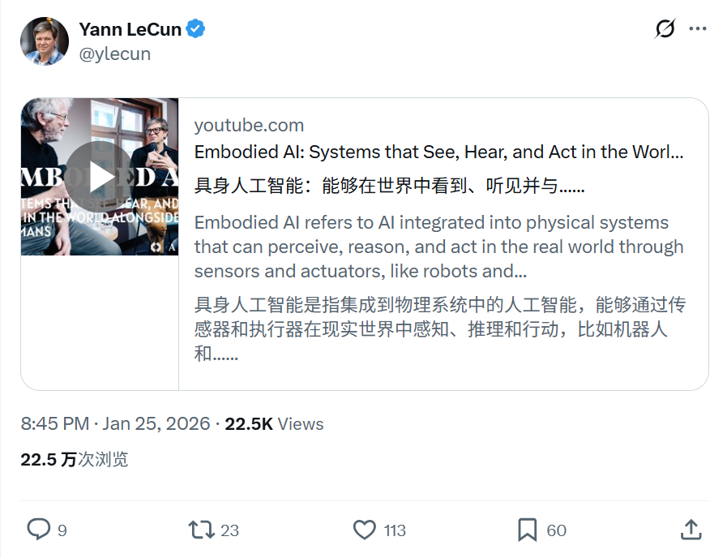
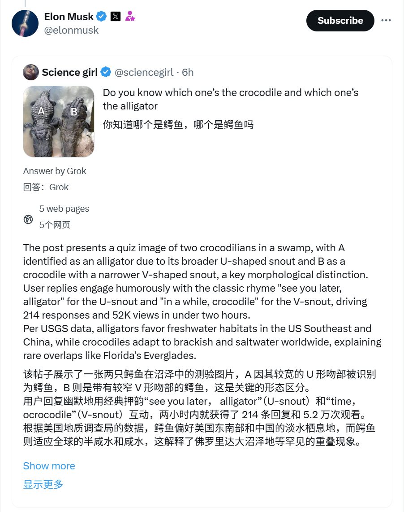

2026/01/25 硅谷AI圈动态
过去24小时，硅谷AI大佬在讨论什么
数据来源：X(twitter)平台实时推文
 小禾说AI (公众号)
清华小禾说AI (视频号)
小禾说AI (公众号)
清华小禾说AI (视频号)
📊 总览
过去24小时，适逢周末，相关账号仅有少量AI相关推文。
主要动态集中在 Yann LeCun 对具身智能（Embodied AI）未来方向的深度讨论，以及
Elon Musk 展示 Grok 的多模态识别能力。本日无重大产品发布或技术突破公告。
| 主题 | 关键事件 |
|---|---|
| 具身智能与世界模型 | Yann LeCun探讨具身智能的挑战，及预测性世界模型的重要性 |
| Grok多模态能力 | Elon Musk展示Grok在视觉识别方面的精准度 |
1
Yann LeCun - 具身智能与世界模型探讨
🚀 核心内容
- 关于具身智能： 分享与 Marc Pollefeys 在 AI House Davos 2026 的炉边对话，深入探讨具身智能 (Embodied AI) 面临的核心难题。
- 关键技术瓶颈： 这里的挑战包括如何构建高效的世界模型 (World Models)、长程预测规划 (Predictive Planning) 以及提升自监督学习 (Self-Supervised Learning) 在机器人领域的应用效率。
- VLA模型局限： 指出当前流行的视觉-语言-动作 (VLA) 模型虽然在多模态上有进展，但存在局限性，并未完全解决物理世界交互的根本问题。
- 未来革命方向： 再次强调 AI 发展的下一阶段革命将由预测性世界模型而非单纯的大语言模型 (LLM) 驱动，机器人硬件效率也是关键一环。
📸 原帖截图

2
Elon Musk - Grok多模态能力展示
🚀 核心内容
- 精准视觉辨识： 分享 Grok 对用户上传图片的精准分析，成功区分并解释了“鳄鱼 (Crocodile)”与“短吻鳄 (Alligator)”在形态上的细微差异，展示了模型细粒度的视觉理解能力。
- 功能演示： 通过直接转发 Grok 的生成结果链接，展示其作为 AI 助手在自然生物分类学等垂直领域的知识储备和交互体验。
📸 原帖截图
